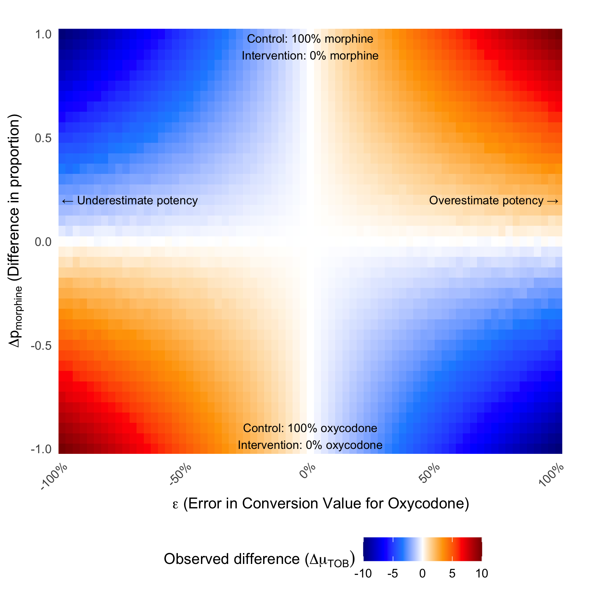
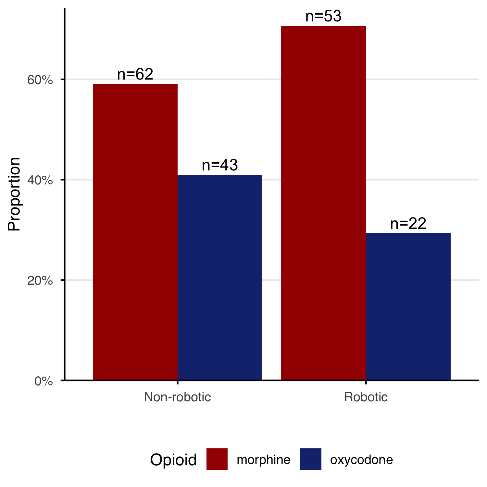
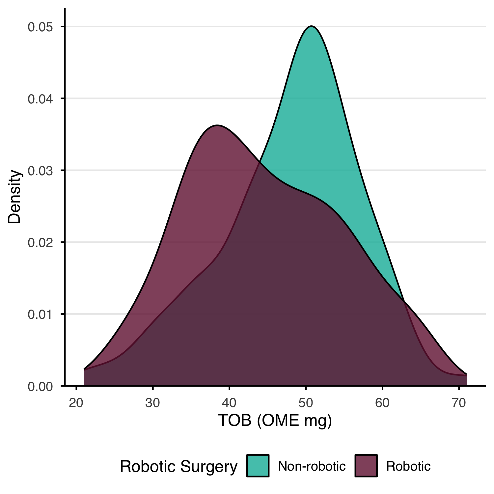
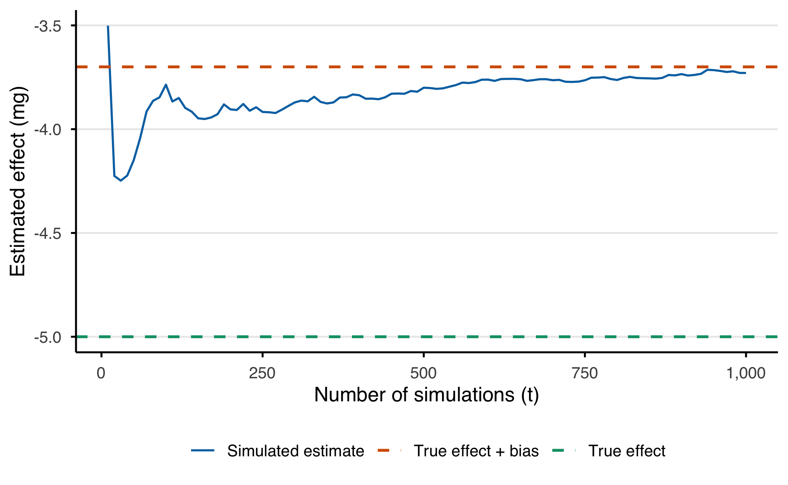
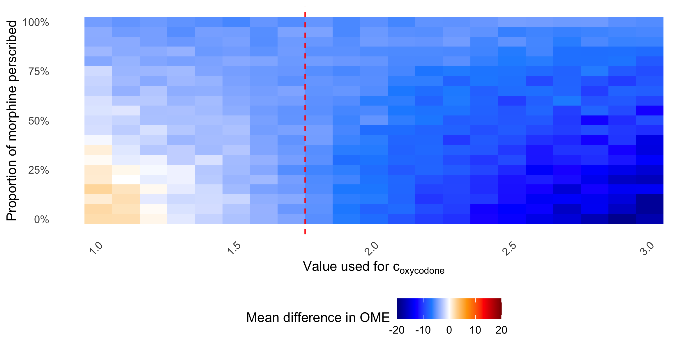
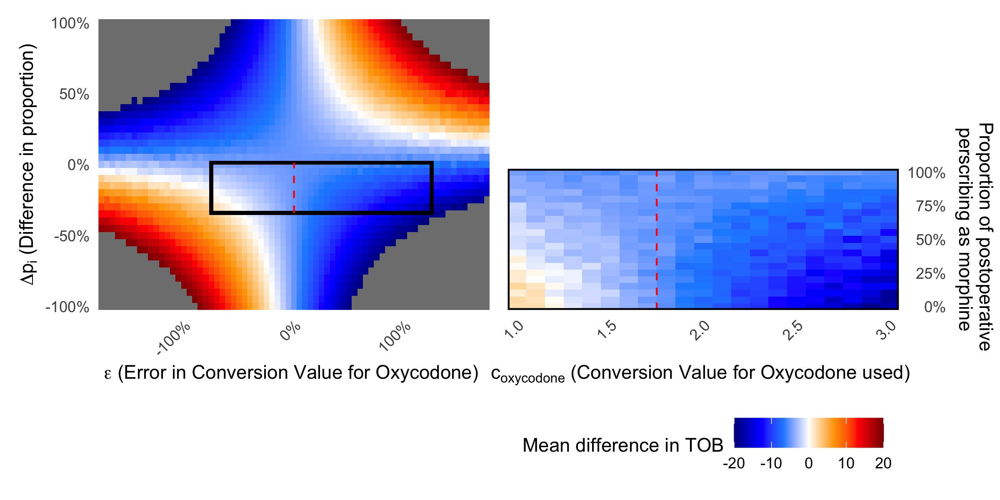

![]()

Supplementary material B — Simulation Studies
B.1 Introduction
Two simulated studies were performed to demonstrate the sensitivity of the total opioid burden (TOB) metric to differences in the proportions of medications between groups and the conversion values used. In both simulations, the outcome measured is the difference in group mean TOB, there was no treatment effect so this is expected to be 0. Additionally, the ground truth value for oxycodone to morphine is set to 1.75, to give a similar but not exact value to the commonly accepted potency of 2, compared to oral morphine.
The first (sec-manuscript-simple-sim) uses a simplified simulation with between groups to understand the variation in results across the full range of parameters.
The second simulation (sec-manuscript-exemplar-sim) uses a hypothetical study setup across a range of realistic values to establish the extent of the variation in results under commonly seen situations.
B.1.1 Aims
To demonstrate the direction and extent of a bias when comparing group means of TOB metrics between groups with differing opioid proportions and with an error in the conversion values.
B.2 Data generating mechanisms
B.2.1 Simple simulation
10,000 samples were divided equally between a control and intervention group. An opioid of either morphine or oxycodone was then sampled from a distribution set by \(\Delta p_i\) to set the proportion \(p\) of each opioid to be reciprocal in each group (\(\bar p_i = 0.5\)). An opioid requirement (\(D\)) was sampled from a normal distribution (\(\mathbb{E}[D] =\) 10 with \(\sigma =\) 0.1) for both groups enforcing a treatment association of 0% (\(\Delta D = 0\)).
For samples where the opioid assigned was morphine, the total morphine dose was set equal to the opioid requirement (\(d_\text{morphine} = D \therefore\ c_\text{morphine}^0 = 1, \epsilon_\text{morphine} = 0\). For samples where the opioid was oxycodone, the total oxycodone dose was set to opioid requirement divided by the ground truth potency (\(c_\text{oxycodone}^0\)) equal to 1.75 (\(d_\text{oxycodone} = \frac{D}{c_\text{oxycodone}^0}\)). For all samples, the opioid consumed was then converted into a TOB, using a conversion value of 1 for morphine and 1.75 +/- an error, \(\epsilon\), for oxycodone. The measured difference between the group mean of the control and intervention groups (\(\Delta \mu = \mu_{\text{TOB, intervention}} - \mu_{\text{TOB, control}}\)) was then calculated. The reference opioid used was oral morphine so the resulting units of the TOB metric are oral morphine equivalence milligrams (OMEmg).
B.2.2 Hypothetical study simulation
A hypothetical study was designed to emulate a retrospective cohort study to compare a surgical intervention on the postoperative opioid requirement. The study set-up is outlined in Note nte-sim-design.
Note B.1: Hypothetical study design
A research team wish to understand if the use of a robot for a surgical procedure, reduces the post-operative pain. They design a retrospective cohort study for patients treated with a robotic procedure and those without. The primary outcome is the total opioid requirement, as measured in OME mg, in the first 24 hours post-operatively as a surrogate for the total pain caused by the surgical procedure.
The annual case volume is 30, these were all performed using non-robotic surgery until 1 Jan 23 when a robot was acquired, and since 80% of cases are performed with the robot. All EHR data was collected between 1 Jan 20 and 31 Dec 25. All patients are treated with a Patient Controlled Analgesia (PCA) after their operation and on average the anaesthetist will prescribe a morphine PCA to 50% of patients and an oxycodone PCA to the remainder. No other opioid medication was administered.
During the study there was a national shortage of oxycodone from 2024-01-01 to 2024-12-31 and at which time all patients were prescribed a morphine PCA. Whilst the authors described this in their methods section, they concluded that it would not impact their results, as the differing opioids were already accounted for in their OME metric.
The difference in proportion (\(\Delta p_i\)) between groups is simulated using a medication shortage that, due to temporal differences between the groups, impacts the treatment group to a greater extent. The ground truth potency of oxycodone is set to 1.75. The post-operative opioid requirement was sampled from a normal distribution (\(\mathbb{E} =\) 50 mg with \(\sigma =\) 10 mg) with the average treatment effect of the intervention is set to -5 TOB mg. TOB was calculated as per described previously.
B.2.3 Estimand
Across all simulations the estimand is the true associational effect of the treatment group \(\Delta \mu^0\).
B.3 Performance measure
Across all simulations the performance measure is the difference in the expected group mean difference and the observed group mean difference \(\Delta \mu_{\text{TOB}}\)
B.4 Methods
The first simulation was then performed once for the range of grid values for \(\Delta p_i \in\) -1, 1 and \(\epsilon \in\) -100%, 100% with all other parameters fixed.
The second simulation was performed once with parameters specified in Note nte-sim-design and repeated across each of the grid values for the rate of post-operative morphine prescribed between 100% and 0% with conversion values of oxycodone:morphine between 1:1 and 3:1. The result for each study was the measured difference between the group mean of the control and intervention groups (\(\Delta \mu_{\text{TOB}}\)), the observed difference in proportion (\(\Delta p_i\)) and the error in the conversion value (\(\epsilon\)).
All simulations were performed in R version 4.6.1 (2026-06-24), using seed 222 code is available on Github.
B.5 Results
B.5.1 Simple simulation
2,911 different simulations where performed across the grid values of \(\Delta p_{\text{oxycodone}}\) and \(\epsilon\). Figure fig-simple-grid-1 demonstrates the observed difference between groups (\(\Delta \mu_\text{TOB}\)) plotted against the difference in the proportion of morphine in the intervention group over the percentage error in the conversion value \(\epsilon\).
Where the conversion value is equal to the ground truth (\(\epsilon\) = 0%) or the proportion of opioids in each group are matched (\(\Delta p_i\) = 0) then the observed group difference is equal to the true treatment association.
B.5.2 Hypothetical study simulation
180 procedures were simulated using the parameters described in sec-manuscript-exemplar-sim.
| Characteristic | Overall N = 1801 |
Non-robotic N = 1051 |
Robotic N = 751 |
p-value2 |
|---|---|---|---|---|
| Opioid | 0.11 | |||
| morphine | 115 (64%) | 62 (59%) | 53 (71%) | |
| oxycodone | 65 (36%) | 43 (41%) | 22 (29%) | |
| TOB (mg) | 46.5 (9.7) | 48.0 (9.2) | 44.5 (10.2) | 0.010 |
| 1 n (%); Mean (SD) | ||||
| 2 Pearson’s Chi-squared test; Wilcoxon rank sum test | ||||
A simple demographics table for the study is shown in Table tbl-sim-demo, this demonstrates the unequal distributions of opioids between groups. Figure fig-sim-ome-1 shows that within the robotic and non-robotic groups the proportion of each opioid is not equal, and the effect of the oxycodone shortage has had a larger impact on the robotic group. Figure fig-sim-ome-2 demonstrates this distribution of the total opioid burden (OME mg) of patients in the robotic and non-robotic patients.


The results in Table tbl-sim-demo represent a single sample of 180 patients that is subject to the variation induced in the random sampling. For this specific sample the observed treatment association of -7.32%.
To reduce the effect of random sampling, the simulation was repeated with the same parameters 1000 times.
The mean opioid burden value for the robotic surgery group was 45.24 TOB mg and for the non-robotic surgery group was 48.97 TOB mg. This gives an observed effect size of the robot as -3.73 TOB mg compared to the realised true effect of -10% TOB mg (nominal -5 TOB mg), giving a bias of 1.271 TOB mg.
B.5.3 Verification of Equation eq-bias
Using Equation eq-bias we can verify the simulation bias is as expected given the parameters.
Let \(T^1\) be the group treated with the robot and \(T^0\) be the group treated non-robotically.
Let \(\epsilon_\text{morphine}\) be 0 and \(\epsilon_\text{oxycodone}\) be \(c_\text{oxycodone} - c_\text{oxycodone}^0\) which is -0.25.
The values of \(\bar{d}_{i,T}\) are observed from the simulation from Table tbl-sim-maths as the mean dose of the opioid within each treatment group. The value of \(D_T\) is calculated from the sum of the mean doses \(\bar{d}_{i}\) within group \(T\). The values of \(p_{i,T}\) are calculated using \(\bar{d}_{i,T}\) and \(D_T\) (Equation eq-prop).
| \(T\) Group |
\(i\) Opioid |
\(n_T\) Group size |
\(\sum_{T} d_i\) Sum dose (mg) |
\(\bar{d}_{i,T}\) group mean dose (mg) |
\(D_T\) group total exposure (mg) |
\(p_{i,T}\) |
|---|---|---|---|---|---|---|
| Robotic | morphine | 71987 | 2280324 | 31.68 | 40.72 | 0.7779 |
| Robotic | oxycodone | 71987 | 650943 | 9.04 | 40.72 | 0.2221 |
| Non-robotic | morphine | 108013 | 2981644 | 27.60 | 41.85 | 0.6596 |
| Non-robotic | oxycodone | 108013 | 1538484 | 14.24 | 41.85 | 0.3404 |
Using the provided values in the bias equation Equation eq-bias yields the following:
\(\bar{D}\) = 0.5(40.72 + 41.85) = 41.28
\(\Delta{D}\) = 40.72 - 41.85 = -1.13
\(\bar{p}_\text{morphine} =\) 0.5(0.7779 + 0.6596) = 0.7188
\(\bar{p}_\text{oxycodone} =\) 0.5(0.2221 + 0.3404) = 0.2812
\(\Delta{p}_\text{morphine} =\) 0.7779 - 0.6596 = 0.1183
\(\Delta{p}_\text{oxycodone} =\) 0.2221 - 0.3404 = -0.1183
Applying Equation eq-bias yields the following estimate of bias
\(\mathcal{B}\) = 41.28((0 x 0.1183)+(-0.25 x -0.1183)) + -1.13 ((0 x 0.7188)+(-0.25 x 0.2812))
\(\mathcal{B}\) = 1.3003 \(\approx\) 1.2709
This estimate of 1.3003 approximates the observed bias of from the simulation of 1.2709 within the variation attributable to random sampling thus confirming bias equation.
Figure fig-convergence demonstrates that with subsequent simulations the mean estimated effect converges with the value of the the true effect combined with the bias. This emphasises that increasing statistical power with the same experimental set-up will not eliminate or reduce the effect of the bias.

B.5.4 Impact of conversion set and proportions
The hypothetical study was repeated using the grid values of different conversion values and different proportion of postoperative oxycodone prescribing. The prior was informed by ranges observed in the literature and the latter to influence the degree of different in opioid proportions between groups. For each set of grid values, 5 were performed and the mean observed difference calculated. Given a 50 mg expected opioid requirement and a treatment effect of -10% it is expected the observed difference of the robotic group to be -5 mg.

Figure fig-sim-grid-search-1 is a heat map of the mean observed difference of each of the grid values of the postoperative prescribing of morphine rates and the conversion value of oxycodone used.
Where the proportion of post-operative morphine prescribing is close to 100%, the exogenous effect of an oxycodone shortage has little diverging impact on the proportions of opioids between groups, thus the true treatment effect of -5 mg OME is recovered. However, were the rate of postoperative morphine prescribing is lower,the oxycodone shortage causes further divergence of the proportions between groups, resulting in wider variation in the observed difference. Where the conversion value supplied is close to the ground truth (as indicated by the red line) then the error is low. At the extreme, the maximum and minimum values are 2.56 mg and -18.78mg respectively.
Figure fig-compare demonstrates the experiment space for the hypothetical study simulation values where \(\Delta p_i < 0\) and for values of \(-0.5 < \epsilon < 1\). Despite being a relativity narrow section of the possible grid space detailed in sec-manuscript-results-simple with a modest effect size of -5 OME mg there are still values where the observed effect size is significantly different.

Supplementary material B — Simulation Studies – The inherent bias in studies reporting outcomes using total opioid burden metrics: a simulation study
Supplementary material B — Simulation Studies – The inherent bias in studies reporting outcomes using total opioid burden metrics: a simulation study
Supplementary material B — Simulation Studies – The inherent bias in studies reporting outcomes using total opioid burden metrics: a simulation study
The inherent bias in studies reporting outcomes using total opioid burden metrics: a simulation study